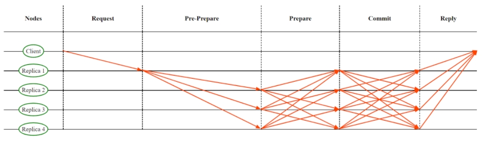

PBFT consensus protocol is the most basic BFT protocol based on voting which was proposed in the late 90s. It was designed to be able to tolerate a fixed fraction of malicious nodes in the network and still be able to reach consensus on a transaction proposed.
PBFT protocol is executed with a number of nodes ‘n’, where n>=3f + 1 and f is the number of byzantine nodes. One of the nodes acts as the primary node with some additional responsibilities. When the client sends a digitally signed transaction to a primary replica (which is elected by all other replicas in the block chain), it is responsible to coordinate, assign sequence number and send the ordered requests to all the other nodes called replicas (R1, R2 and R3). This phase is known as the ‘pre-prepare phase’. Now all the replicas send the pre-prepare message they received from primary to all the other replicas (including the primary node). This phase is known as the ‘prepare phase’. By the end of the prepare phase, all the good replicas would be able to know that the majority of other replicas have received the same transaction as they did and hence go ahead and prepare themselves for the commit. All the good replicas now create a ‘prepare certificate’ and send it to all the other replicas (including the primary). Hence, by the end of the commit phase if the majority of replicas send the same prepare certificate, all the good replicas will know that not only is there a majority of replicas who have received the same transaction but all the other good replicas have also sent the same prepare certificate. Hence consensus is reached for the given transaction, so replicas go ahead and execute the transaction and all the replicas including the primary reply to the client acknowledging the transaction.

If the majority replicas didn’t send the same transaction by the end of prepare phase as the one a particular replica did (For e.g.: R1), R1 detects that primary is faulty and does not send the prepare certificate and instead it sends a view change request to replace the existing primary. Hence whenever there is some malicious behaviour of primary detected, nodes send view change requests. When enough votes representing majority (2/3rd) are received for view change, the existing primary is replaced with a new primary and the process repeats until an honest primary is elected and is working properly.
To overcome the drawback to scalability due to communication overhead of O(n^2), many new variants of PBFT have been proposed such as Zyzzyva, RBFT which were build on top of the traditional protocol.